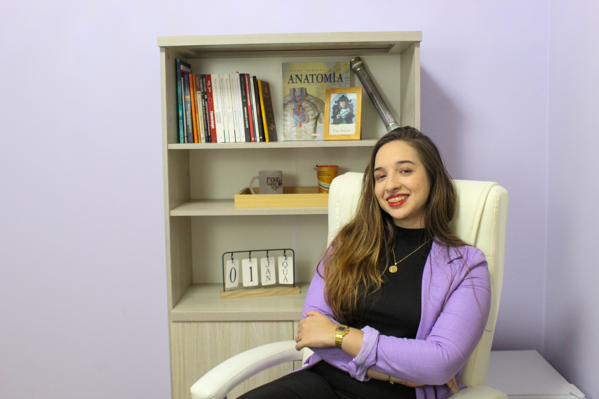

Cuidado para cada etapa da comunicação
Ajude seu filho a se comunicar com confiança
Aqui, crianças e famílias encontram uma equipe preparada para ouvir, compreender e cuidar de cada necessidade com carinho e respeito. O acompanhamento é individualizado e pensado para apoiar o desenvolvimento, a autonomia e a confiança em cada fase.
Agendar uma avaliação
- Escuta e acolhimento
- Respeito à individualidade
- Cuidado em equipe
- Família como parceira

Mais que um consultório. Um lugar de encontro.
Contamos com uma equipe preparada, respeitamos as necessidades e particularidades de cada pessoa. Nosso espaço reúne diferentes áreas de atendimento para promover um cuidado integrado, humano e individualizado.
✓ Atendimentos especializados para diferentes fases da vida
✓ Cuidado individualizado para cada necessidade
Profissionais registrados
Especialidades integradas
Cuidado acolhedor para famílias
Cuidar é também
trabalhar em conjunto
Profissionais que compartilham o espaço e seu conhecimento, trazendo o melhor atendimento.

FONOAUDIÓLOGA
Luiza Busnardo - CRFa 1-17256
Fonoaudiologia Hospitalar e Disfagia, Linguagem Infantil.
FONOAUDIÓLOGO
Wallace Luz - CRFa 1-16998
Especialista em Voz, Oratória e Aulas de canto.

FONOAUDIÓLOGA
Iuli Viana - CRFa 1-16571
Especializada em Neopediatria e Desenvolvimento Infantil.
Experiências compartilhadas
Cuidado que acompanha cada etapa.
“Um atendimento acolhedor, claro e respeitoso com as necessidades da nossa família.”
Responsável por paciente
“Toda a equipe demonstra atenção, carinho e profissionalismo em cada encontro.”
Paciente atendido no consultório
PERTO DE VOCÊ, ENTRE OS ENCONTROS
Seu cuidado, em um só lugar.
Uma área reservada para nossos pacientes e responsáveis, onde terão
acesso à nossa plataforma com atividades, indicações de livros,
vídeos, materiais didáticos e
exercícios para casa.
Área segura do paciente
SEU PRIMEIRO ACESSO
Vamos encontrar
um caminho juntos?
Conte o que você está buscando. Nossa conversa começa com espaço para ouvir você.